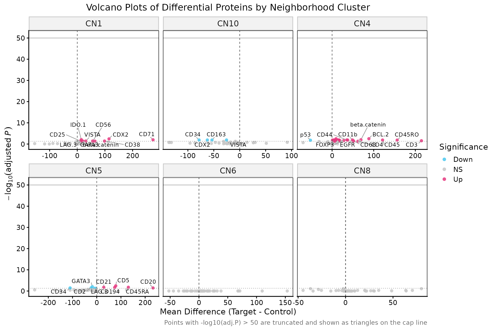

This tutorial demonstrates how to perform functional enrichment analysis on spatially defined neighborhoods to identify biological pathways and processes.
1. Load Data
# Load neighborhood clustering results
df <- read.csv("results.csv")
# Load protein expression data
protein <- read.csv("../tsu33_expression_filtered.csv",
check.names = FALSE,
row.names = 1)
# Check data dimensions
message("Neighborhood data: ", nrow(df), " cells")
message("Protein data: ", nrow(protein), " proteins x ", ncol(protein), " cells")3. Differential Expression Analysis
# Perform differential expression between neighborhoods
diff_results <- perform_differential_expression(protein_df)
# Save results
write.csv(diff_results, "diff_results.csv")
# View summary statistics
summary(diff_results$Log2FC)
table(diff_results$Significance)4. Volcano Plot Visualization
# Generate volcano plots for all clusters
volcano_all <- plot_volcano_all_clusters(diff_results)
# Adjust aspect ratio and save
volcano_all <- volcano_all + theme(aspect.ratio = 0.75)
ggsave("VolcanoPlots_AllClusters.pdf", volcano_all, width = 10, height = 20)
5. Functional Enrichment Analysis
# Perform enrichment analysis using human databases
cluster_enrich <- perform_cluster_enrichment(
diff_results,
species = "human"
)
# Save enrichment results
saveRDS(cluster_enrich, "cluster_enrich.rds")
# View enrichment summary
message("Enriched terms found: ", nrow(cluster_enrich))
message("Clusters with enrichment: ", length(unique(cluster_enrich$Cluster)))Enrichment Databases: - GO Biological Processes - GO Molecular Functions - KEGG Pathways - Reactome Pathways - CORUM Complexes
6. Visualize Enrichment Results
# Generate publication-quality enrichment plots
plots <- plot_enrichment_results(
cluster_enrich,
top_n = 5, # Top 5 terms per cluster
fdr_cutoff = 0.05, # FDR threshold
term_trunc_length = 40, # Term name length
base_font_size = 7, # Font size
plot_types = "bar", # Plot type (bar, heatmap, dot)
save_plot = TRUE # Save plots automatically
)
# Access individual plots
bar_plot <- plots$bar_plot
heatmap_plot <- plots$heatmap
dot_plot <- plots$dot_plot